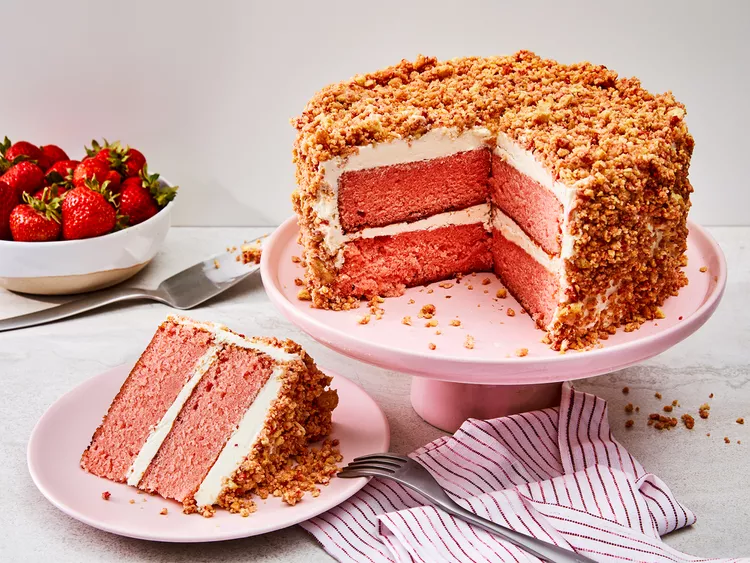

Strawberry Cake Recepy

Description
This strawberry crunch cake has 2 layers of strawberry-flavored cake,
vanilla buttercream frosting, and a delicious strawberry and golden
cookie crumble coating. Perfect for a show-stopping dessert,
or for anyone who loves strawberry crunch ice cream bars!
This dessert is one that pops. Strawberry crunch ice cream bars always
did as a kid, and this strawberry crunch cake is no different.
If you want a treat that hits the same sweet spot, this dessert is for you.
While this cake may seem challenging, it is very approachable and well-worth
making once you’re able to dig in.
Ingredients
- baking spray with flour
- 2 ½ cups all-purpose flour
- 3 tablespoons strawberry-flavored gelatin, such as Jell-O
(from 1 (3 ounce) package)
- 1 teaspoon baking powder
- 1 teaspoon kosher salt
- ½ teaspoon baking soda
Steps
- Preheat the oven to 350 degrees F (175 degrees C).
Coat 2 (8-inch) round cake pans with baking spray with flour and
line bottoms with parchment.
- To make the cake: Whisk flour, gelatin, baking powder,
salt, and baking soda together in a bowl.
- Beat butter at medium speed until creamy, 2 to 3 minutes in the bowl
of a stand mixer fitted with the paddle attachment. Gradually add sugar,
beating until light and fluffy, about 3 minutes. Add eggs, 1 at a time,
beating on low speed and scraping down sides of bowl as needed, until
just combined. Beat in vanilla.